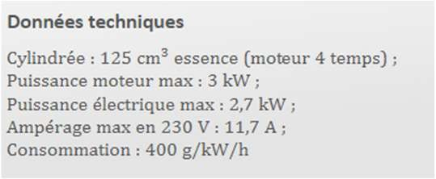

S1L'alternateur
≈ 1 h 30Comprendre la machine qui produit 95 % de l'électricité mondiale : d'où elle vient, comment elle marche, et pourquoi elle ne rend jamais tout ce qu'on lui donne.
Une ville, deux nuits
L'énergie électrique accompagne chaque seconde de notre vie. Si nous devions nous en passer, cela nous ramènerait à la fin du XIXe siècle : éclairage au gaz ou à la bougie, chevaux, vélo ou train à vapeur pour se déplacer, et bien sûr ni ordinateur, ni téléphone, ni radio, ni télévision…


🎬 Des rappels sur l'électricité, avant d'entrer dans le chapitre.
- Alternateur
- La machine qui transforme un mouvement en courant électrique. On la démonte à l'étape 1.3.
- Courant alternatif
- Un courant dont le sens change régulièrement — 50 fois par seconde sur le réseau français.
1831 — Faraday et l'induction électromagnétique


🎬 L'expérience de Faraday, refaite devant la caméra.
Lorsqu'un se déplace dans un , il peut apparaître une à ses bornes — ou un si le circuit est fermé.
Rotor, stator : comment marche un alternateur
L'alternateur est à l'origine de plus de 95 % de l'électricité produite dans le monde. De fait, il s'agit donc d'un dispositif sur lequel repose entièrement nos sociétés industrialisées.


L'origine de l'énergie mécanique est très variable. Le rotor peut être mis en mouvement par une turbine entraînée par de la vapeur d'eau (centrale au charbon, au gaz, au pétrole, centrale nucléaire) ou de l'eau liquide (centrale hydroélectrique). Il peut également l'être par le vent (l'hélice d'une éolienne) ou par un moteur (voiture, groupe électrogène).
| Installation | Ce qui entraîne le rotor |
|---|---|
| Centrale nucléaire | |
| Barrage hydroélectrique | |
| Éolienne | |
| Groupe électrogène |
🎬 Comprendre en vidéo : comment produit-on de l'électricité ?
Le rendement : ce qui sort, sur ce qui entre
Le rendement d'un convertisseur tel que l'alternateur est une propriété déterminante. Dans un système électromécanique, les sources de dissipation d'énergie sont de plusieurs natures : pertes mécaniques (frottements), pertes par effet Joule dans les circuits électriques, et pertes dites « fer ». Ces pertes sont comparables entre elles dans les systèmes réels. Dans tous les cas, l'énergie est dissipée (notée Ediss) sous forme de chaleur. Si cette chaleur est trop élevée et mal évacuée, le système va s'échauffer au risque de se détériorer.

Un alternateur reçoit Eméca = 5 kJ et fournit Eélec = 4 500 J.
L'énergie dissipée : Ediss = Eméca − Eélec = 5 000 − 4 500 = J.
Le rendement : η = Eélec / Eméca = 4 500 / 5 000 = , soit %.
Exercice 2 — Le rendement d'un groupe électrogène

soit environ kW — exactement la puissance électrique maximale annoncée. C'est donc bien .
η = Pélec / Pméca = 2,7 / 3 = , soit %.
On se sert de ce groupe pour alimenter un appareil électrique consommant une puissance de 1,5 kW pendant 2 h.
Volume : on divise par la densité, 1 200 ÷ 0,75 = mL, soit L d'essence.
Les ressources que porte la diapositive de révision du cours, récupérées par leurs QR codes.
🎬 Réviser en vidéo — l'alternateur et la production de masse.
🎬 S'exercer en vidéo — un exercice de rendement d'alternateur, corrigé pas à pas.
Kahoot — Conversions, niveau 1 ↗ Kahoot — Les réflexes de la conversion ↗
🎬 Art et électricité — La Fée Électricité de Raoul Dufy, commentée par Étienne Klein.
🎬 Pour découvrir la chaîne YouTube de ton enseignant : la controverse Galvani-Volta, ou comment des grenouilles ont mené à la pile.
S2Les panneaux photovoltaïques
≈ 1 h 30Les 5 % qui restent : le seul moyen de produire de l'électricité sans faire tourner quoi que ce soit. Pourquoi ça marche, et pourquoi ça marche si mal.
Conducteur, isolant… et entre les deux
Les panneaux photovoltaïques, ou panneaux solaires, qui transforment une partie de l'énergie lumineuse reçue en énergie électrique, sont essentiellement constitués de silicium. Le silicium est un semi-conducteur.


| Matériau | Bandes de valence et de conduction | Conséquence |
|---|---|---|
| Conducteur | elles se chevauchent : les électrons périphériques passent librement de l'une à l'autre | conduit le courant |
| Isolant | le gap est trop grand : il est très difficile d'acquérir assez d'énergie pour le franchir | ne conduit pas le courant |
| Semi-conducteur | le gap est assez faible : un apport modeste — des photons du visible ou de l'infrarouge — suffit à faire passer les électrons | passe d'isolant à conducteur quand on l'éclaire |
Chez un conducteur, les deux bandes .
Chez un isolant, le gap est .
Chez un semi-conducteur, un apport d'énergie modeste, par exemple des du visible ou de l'infrarouge, suffit à faire passer les électrons.
La jonction P/N : fabriquer du courant avec de la lumière
Une cellule photovoltaïque simple est constituée d'une jonction P/N, c'est-à-dire deux feuillets de silicium dont les propriétés physiques ont été légèrement modifiées — on parle de dopage :
- la zone dopée P contient une accumulation de charges négatives ;
- la zone dopée N contient une accumulation de charges positives.
Lorsque les électrons des semi-conducteurs reçoivent de l'énergie de la part des photons émis par le Soleil, ceux-ci se mettent à circuler de la zone dopée N à la zone dopée P. C'est ainsi que l'on produit de l'énergie électrique à partir d'un rayonnement.


Pourquoi le rendement plafonne sous 20 %
Lorsqu'un semi-conducteur absorbe un photon d'énergie supérieure à celle de son gap, l'énergie excédentaire est transformée en chaleur. Si un panneau au silicium (gap de 1,1 eV) absorbe un photon d'énergie 3 eV :
Deux pertes, donc, et dans les deux sens : trop d'énergie, le surplus part en chaleur ; pas assez, le photon traverse sans rien donner. C'est ce qui explique le faible rendement des panneaux solaires au silicium — moins de 20 %.
Photon de 1,1 eV : il est absorbé, et rien n'est perdu en chaleur — c'est le cas idéal.
Photon de 0,8 eV (infrarouge lointain) : son énergie est au gap, il n'est donc et ne produit rien.
Exercice 3 — Choisir le bon semi-conducteur

Mais la réponse ne s'arrête pas là : le rendement et le coût du germanium ne sont pas compétitifs en comparaison de l'arséniure de gallium (meilleur rendement) ou du silicium (bien moins cher). Le meilleur absorbeur n'est pas le meilleur choix industriel — et c'est tout l'intérêt de la question.
Améliorer le rendement — et bilan du chapitre
| Technologie | Principe | Rendement | Limite |
|---|---|---|---|
| Cellules multi-jonctions | plusieurs couches de semi-conducteurs, chacune efficace dans un domaine précis du spectre solaire | ≈ 30 % | fabrication complexe, bien plus cher — réservé au spatial |
| Cellules organiques | le semi-conducteur est fabriqué avec des molécules organiques | 5 à 12 % | se dégradent vite au contact de l'humidité et de l'oxygène de l'air |
Les cellules organiques ont en revanche un atout de taille : elles ne nécessitent pas de ressources rares et ne coûtent pas cher à fabriquer.


- 95 % de l'électricité mondiale sort d'un alternateur ; le reste, pour l'essentiel, de panneaux photovoltaïques.
- Faraday, 1831 : l'induction électromagnétique — un conducteur qui se déplace dans un champ magnétique voit apparaître une tension à ses bornes.
- Un alternateur, c'est un rotor (mobile, aimanté) qui tourne dans un stator (fixe, bobiné) ; il produit du courant alternatif.
- η = Eélec/Eméca = Pélec/Pméca, avec Eméca = Eélec + Ediss et 0 ≤ η ≤ 1. Les pertes sont mécaniques, par effet Joule, et « fer » — toutes en chaleur.
- Un semi-conducteur a une conductivité intermédiaire : son gap est assez faible pour qu'un photon le franchisse.
- Une cellule photovoltaïque est une jonction P/N ; son spectre d'absorption doit couvrir au mieux le spectre du Soleil.
- Rendement du silicium < 20 % : les photons trop énergétiques perdent le surplus en chaleur, les autres ne sont pas absorbés.
| Je sais… | Où le revoir |
|---|---|
| Reconnaître les éléments principaux d'un alternateur (source de champ magnétique et fil conducteur en mouvement relatif) dans un schéma fourni. | étape 1.3 |
| Définir le rendement d'un alternateur et citer un phénomène susceptible de l'influencer. | étape 1.4 |
| Calculer un rendement à partir des énergies ou des puissances. | étapes 1.4 et 1.5 |
| Expliquer la différence conducteur / semi-conducteur / isolant avec la théorie des bandes et la notion de gap. | étape 2.1 |
| Comparer le spectre d'absorption d'un matériau et le spectre solaire pour discuter s'il peut servir de capteur photovoltaïque. | étapes 2.2 et 2.4 |
| Argumenter autour de la mise en place d'une installation photovoltaïque domestique ou industrielle. | étapes 2.3 et 2.5 |
Écris oui en face de chaque ligne que tu sais faire, et pas encore sinon — puis reviens à l'étape indiquée.